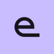

The spiral is gone. The icon is the first letter of the Rail wordmark, cut from the same path, with its tail running out into the level line. It is one open letterform, so nothing in it reads as rotation.

Launcher masksAdaptive icon, 108 dp. The glyph sits inside the 66 dp safe zone, so every mask keeps it whole.
System splashAndroid 12+ shows this before the app’s own loading screen. Static icon, no animation, so the handover into the wordmark reveal is seamless.